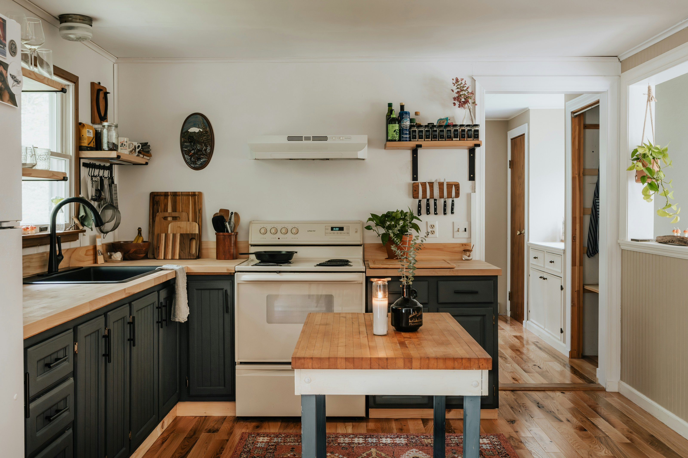

[Town] · House extension
From separate rooms to one useful family space
[PLACEHOLDER: Add confirmed scope, duration and materials. Do not publish invented figures.]
Projects
Draft examples. Replace with real work.
Draft project 01
[PLACEHOLDER PROJECT DESCRIPTION] Replace with the actual brief, major work completed, location and one useful detail about the finished result.
[PLACEHOLDER: Add confirmed scope, duration and materials. Do not publish invented figures.]
Draft project 02
[PLACEHOLDER PROJECT DESCRIPTION] Explain why the opening was made, what structural support was required and which parts of the finish were included.


[PLACEHOLDER: Add engineer involvement, beam arrangement and confirmed finish without exposing private details.]
Draft project 03
[PLACEHOLDER PROJECT DESCRIPTION] Describe excavation, drainage, paving product and how thresholds or changes in level were handled.


[PLACEHOLDER: Add actual paving, approximate area only if the customer approves, and one construction detail.]
What makes a useful project story?
For the live site, show the original problem, the important building decisions and the result. A homeowner wants to know whether you have handled a job like theirs—not just see a perfect final room.
Have a similar job?